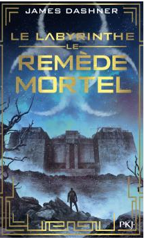

L'Alchimiste Descriptions :
Le héros de ce court roman est un jeune berger espagnol, Santiago. Il a fait ses études au séminaire, mais il a renoncé à être prêtre, contre le souhait de ses parents. Il préfère une vie au contact de la Nature, tout en continuant à se cultiver par la lecture. À la suite d'un rêve lui révélant l'existence d'un trésor caché au pied des pyramides d'Égypte, il décide d'entreprendre le voyage qui le conduit d'Andalousie jusqu'à Gizeh, en passant par Tanger et le désert du Sahara. Le Remède Mortel

Descriptions :
Le WICKED a tout volé à Thomas : sa vie, sa mémoire et maintenant ses seuls amis. Mais l'épreuve touche à sa fin. Ne reste qu'un dernier test... Terrifiant. Cependant Thomas a retrouvé assez de souvenirs pour ne plus faire confiance à l'Organisation. Il a triomphé du labyrinthe. Il a survécu sur la terre brûlée. Il fera tout pour sauver ses amis, même si la vérité risque de provoquer la fin de tout.
James Dashner est né en 1972 en Georgie aux États-Unis. Il est l’auteur de nombreux romans fantasy pour la jeunesse : The 13th Reality, The Jimmy Fincher Saga, Leven Thumps, Fablehaven… Sa nouvelle série The Maze Runner, créée en 2009, devient rapidement un best-seller. L'Alchimiste Descriptions :
Le héros de ce court roman est un jeune berger espagnol, Santiago. Il a fait ses études au séminaire, mais il a renoncé à être prêtre, contre le souhait de ses parents. Il préfère une vie au contact de la Nature, tout en continuant à se cultiver par la lecture. À la suite d'un rêve lui révélant l'existence d'un trésor caché au pied des pyramides d'Égypte, il décide d'entreprendre le voyage qui le conduit d'Andalousie jusqu'à Gizeh, en passant par Tanger et le désert du Sahara. L'Alchimiste Descriptions :
Le héros de ce court roman est un jeune berger espagnol, Santiago. Il a fait ses études au séminaire, mais il a renoncé à être prêtre, contre le souhait de ses parents. Il préfère une vie au contact de la Nature, tout en continuant à se cultiver par la lecture. À la suite d'un rêve lui révélant l'existence d'un trésor caché au pied des pyramides d'Égypte, il décide d'entreprendre le voyage qui le conduit d'Andalousie jusqu'à Gizeh, en passant par Tanger et le désert du Sahara. L'Alchimiste Descriptions :
Le héros de ce court roman est un jeune berger espagnol, Santiago. Il a fait ses études au séminaire, mais il a renoncé à être prêtre, contre le souhait de ses parents. Il préfère une vie au contact de la Nature, tout en continuant à se cultiver par la lecture. À la suite d'un rêve lui révélant l'existence d'un trésor caché au pied des pyramides d'Égypte, il décide d'entreprendre le voyage qui le conduit d'Andalousie jusqu'à Gizeh, en passant par Tanger et le désert du Sahara.